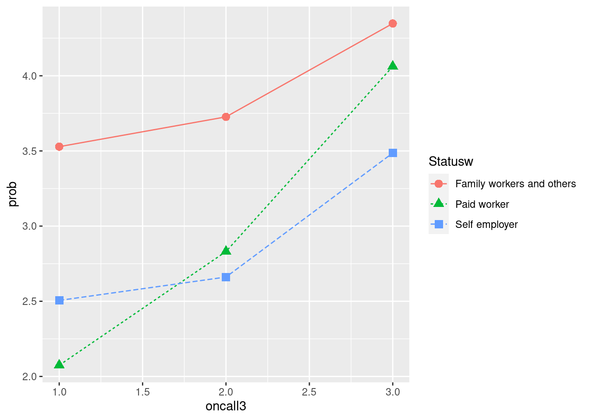
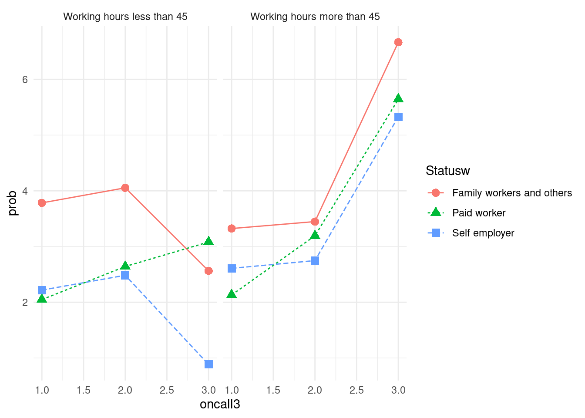
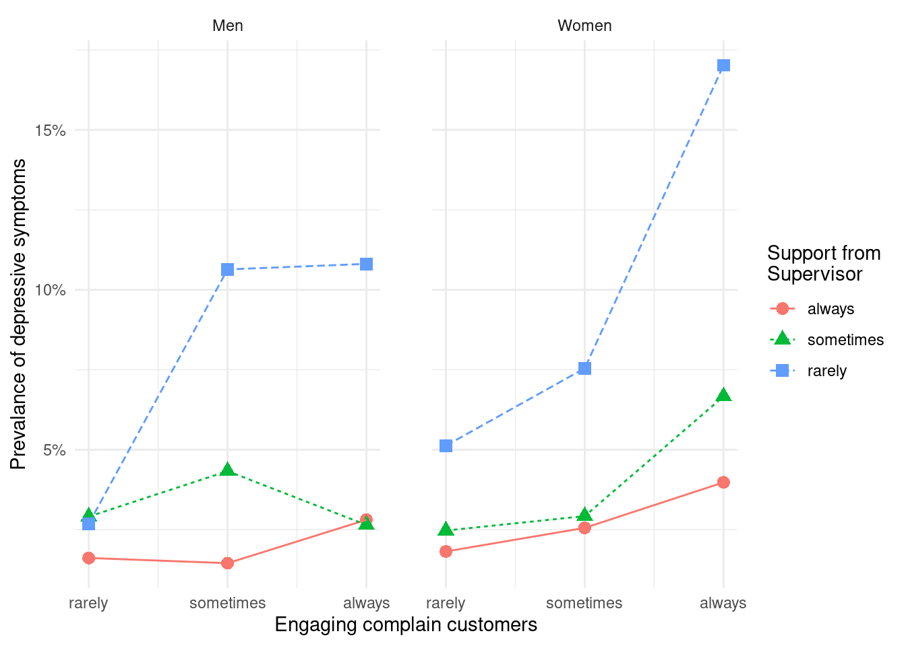
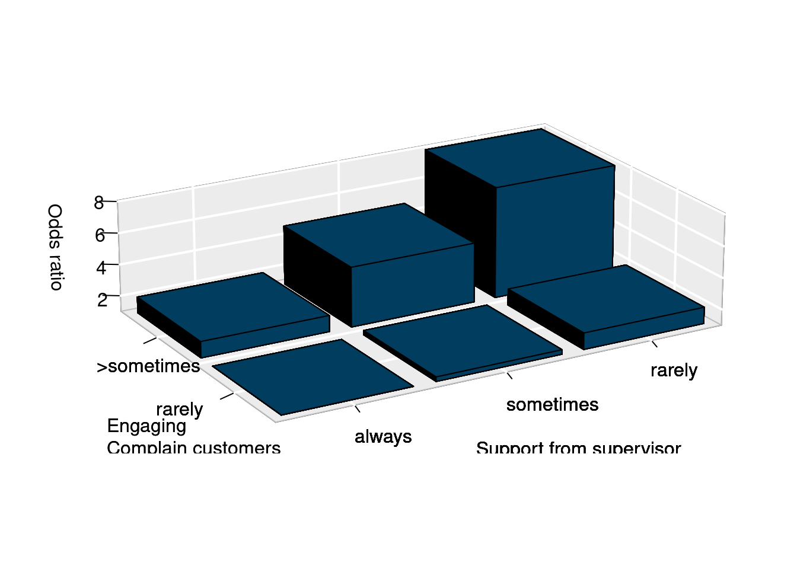
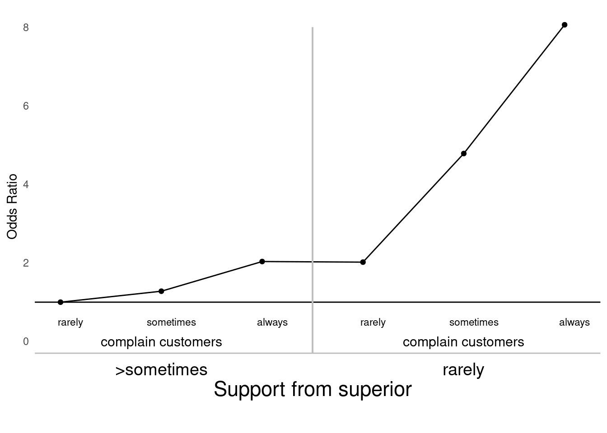

Chapter 11 graphs for public health I
11.1 데이터 그림 준비
실습 자료는 2017년 근로환경조사 자료를 통해 실습할 것입니다.. 자료는 안전보건공단, 근로환경조사 원시자료 사이트 (http://kosha.or.kr/kosha/data/primitiveData.do) 에서 신청할 수 있습니다.. 시각화는 표와 그래프 둘을 다룰 것이고, 표는 보건학에서 주로 사용하는 표1,2,3과 그래프는 막대 그래프부터 시계열 자료까지 나타내도록 하겠습니다. 실습에 필요한 라이브러리를 불러오겠습니다.
library(devtools)
library(Table1)
library(ggplot2)
library(tidyverse)
library(htmlTable)
library(haven)
library(gmodels)저번 시간에 이어 근로환경조사 자료를 불러오고 온콜과 우울에 대한 데이터를 불러오겠습니다. 데이터 변형에서 실습했던 코드입니다.
a=read_sas("data/kwcs5th.sas7bdat") # 근로환경조사 5차
# 변수생성: 온콜 여부/빈도, 우울, 연령, 성별, 교육, 근무시간, 종사상지위, 고용형태, 소득#
a0<-a %>%
select(Q35, AGE, TSEX, TEF1, Q22_1, Q05, Q06, EF11, EF12, Q69,Q62_1_8, Q35, # 기존 실습
Q16_1, Q26_7, Q26_8, Q49_15, Q49_2, Q49_1) # 새로 추가된 실습과제
# 변수 구획 정하기 ------
Wh_breaks <- c(-Inf, 35, 45, 55, 65, Inf)
Wh_labels <- c('<35','35-44','45-54','55-64','>=65')
inc_break <- c(-Inf, 100, 200, 300, 400, Inf)
inc_label <- c('<100', '100-199', '200-299', '300-399', '>400')
# 데이터 step ------
a1 <-a0 %>%
filter(AGE <65 ) %>%
filter(!is.na(Q22_1)) %>%
filter(!TEF1 == 9) %>%
filter(!Q69 == 9) %>%
filter(!Q62_1_8 == 9) %>%
mutate(oncall = Q35) %>%
mutate(oncallgp = ifelse(oncall %in% c(1, 2, 3), "on call", "non-on call")) %>%
mutate(oncallgp3 = ifelse(oncall %in% c(1,2,3), "several times a month",
ifelse(oncall %in% c(4), "rarely", "none"))) %>%
mutate(oncallgp3 = factor(oncallgp3,
levels=c("none", "rarely", "several times a month")))%>%
mutate(agegp = ifelse(AGE <30, '<30',
ifelse(AGE <40, '30-49',
ifelse(AGE <50, '40-49',
ifelse(AGE < 60, '50-59', '≥60'))))) %>%
mutate(Wh=cut(Q22_1, breaks=Wh_breaks, include.lowest=TRUE, right=FALSE,
labels=Wh_labels)) %>%
mutate(Wh=structure(Wh, label='Working hours')) %>%
mutate(Gender=factor(TSEX, levels=c(1,2), labels=c('Men', 'Women') )) %>%
mutate(Education=factor(TEF1, levels=c(1,2,3,4),
labels=(c('Primary', 'Middle', 'High', 'University')))) %>%
mutate(Statusw=ifelse(Q05 %in% c(1,2), 'Self employer',
ifelse(Q05 %in% c(3), 'Paid worker',
'Family workers and others'))) %>%
mutate(inc1=ifelse(EF11 <10000, EF11, ifelse(EF12<10, EF12*100-50, NA) )) %>%
mutate(inc=cut(inc1, breaks=inc_break, labels=inc_label)) %>%
mutate(job_st = factor(Q69, levels = c(1:4),
labels = c("Very satisfied", "Satisfied", "Unsatisfied", "Very unsatisfied"))) %>%
mutate(job_st = structure(job_st, label = 'Job Satisfaction')) %>%
mutate(depression = Q62_1_8)%>%
mutate(depression = structure(factor(depression, levels=c(1, 2),
labels=c("Depression", "Non depression")))) 11.2 실습 자료 시각화
이 데이터를 이용해서 다음과 같은 그래프를 그려보려고 합니다. 저번 시간에 oncall 의 횟수가 늘어나면 우울할 오즈비가 증가하는 것을 표로 나타내었는데요, 그래프를 보면 주 45시간 미만이면서 자영업과 가족종사자에서는 그렇지 않은 반면에, 장시간 근로자에서는 oncall 이 늘어날 수록 우울해 지는 것을 볼 수 있습니다. 왜 그럴까요? 라는 질문이 저절로 나오게 됩니다. 이처럼 그래프를 통해 변화되는 양상을 보여주는 것은 데이터의 속성을 탐구하게 만드는 원동력이 되고는 합니다. 따라서 데이터를 탐구할 때 그래프를 이용해 소통하는 작업을 자주 하는 것이 좋습니다.
그림1
위 그래프를 그리는 과정은 youtube에 올려 놓았습니다.
우선 oncallgp3는 명목변수여서 그래프를 그리기 어렵습니다. 따라서 해당하는 연속변수를 만들어서 그래프를 그리겠습니다. 또한 장시간 근무를 45시간을 기준으로 (주 40시간이 기준이고, 하루 한시간 정도 추가 근무를 하면 45시간이 됩니다.)
a2<- a1 %>%
mutate(oncall3 = case_when(
oncall %in% c(1,2, 3) ~ 3, # several times a month
oncall %in% c(4) ~ 2, # rarely
TRUE ~ 1 # none
)) %>%
mutate(lwh = ifelse(Q22_1 > 45, 2, 1)) %>%
mutate(lwhf = factor(lwh, levels = c(1,2),
labels = c("Working hours less than 45",
"Working hours more than 45")))oncall별 우울감이 얼마나 있는지 계산해 보겠습니다. 우선 전체 4만여명 중에 1006명이 우울감을 호소하고 있습니다.
a2 %>%
group_by(depression) %>%
count() ## # A tibble: 2 × 2
## # Groups: depression [2]
## depression n
## <fct> <int>
## 1 Depression 1006
## 2 Non depression 40583그렇다면 group_by()에 oncall3를 넣고 count에 depression을 넣어 온콜에 따른 우울감 분율을 계산해 보겠습니다.
a2 %>%
group_by(oncall3) %>%
count(depression)## # A tibble: 6 × 3
## # Groups: oncall3 [3]
## oncall3 depression n
## <dbl> <fct> <int>
## 1 1 Depression 773
## 2 1 Non depression 33244
## 3 2 Depression 164
## 4 2 Non depression 5637
## 5 3 Depression 69
## 6 3 Non depression 1702이때 그래프를 그리기 위해 필요한 것은 Depression은 분율 또는 prevalance입니다. group별 우울감 여부 (n)을 group별 총 명수 (sum(n))으로 나누면 1번 집단은 773/(773+33244)의 크기로 우울감 유병율이 나타나게 됩니다.
a2 %>%
group_by(oncall3) %>%
count(depression) %>%
mutate(prob = n/sum(n)*100)## # A tibble: 6 × 4
## # Groups: oncall3 [3]
## oncall3 depression n prob
## <dbl> <fct> <int> <dbl>
## 1 1 Depression 773 2.27
## 2 1 Non depression 33244 97.7
## 3 2 Depression 164 2.83
## 4 2 Non depression 5637 97.2
## 5 3 Depression 69 3.90
## 6 3 Non depression 1702 96.1다만 그래프를 그릴때 사용되는 것은 우울감의 유병율이므로 filter 를 통해 depression 변수의 변수값이 Depression일 때만을 사용하도록 하겠습니다.
a2 %>%
group_by(oncall3) %>%
count(depression) %>%
mutate(prob = n/sum(n)*100) %>%
filter(depression == 'Depression')## # A tibble: 3 × 4
## # Groups: oncall3 [3]
## oncall3 depression n prob
## <dbl> <fct> <int> <dbl>
## 1 1 Depression 773 2.27
## 2 2 Depression 164 2.83
## 3 3 Depression 69 3.90이제 oncall3의 1, 2, 3을 x-축에, prob(우울감 유병률)을 y-축에 위치시키고 그림을 그리겠습니다. 그림은 ggplot2 라이브러리를 이용하겠습니다. 이것이 가장 기본적인 그래프 그리기입니다. aes안에는 x, y축을 담당하고 데이터의 기본 가정에 해당하는 것을 적어 놓습니다. geom_* 뒤에는 표현 방식에 대한 부분을 넣습니다. geom_line은 선차트, geom_point 산점차트를 그린다는 것입니다.
a2 %>%
group_by(oncall3) %>%
count(depression) %>%
mutate(prob = n/sum(n)*100) %>%
filter(depression == 'Depression') %>%
ggplot(aes(x = oncall3, y = prob)) +
geom_point()+
geom_line()
우리는 이제 데이터에 내포된 의미를 찾기 위해 고용형태에 따른 oncall과 우울간의 관계를 그려보고자 합니다. 따라서 group_by( )에 고용형태 변수를 넣어 같은 그림을 그려봅니다. 상기 그래프에서 color, shape, linetype을 고용형태에 따라 다르게 해달라고 표신한 부분을 확인해 주세요.
a2 %>%
group_by(oncall3, Statusw) %>%
count(depression) %>%
mutate(prob = n/sum(n)*100) %>%
filter(depression == 'Depression') %>%
ggplot(aes(x = oncall3, y = prob)) +
geom_point(aes(color = Statusw, shape = Statusw), size =3) +
geom_line(aes(color = Statusw, linetype = Statusw)) 
이번에는 그래프를 둘로 나눌 것입니다. 하나는 45시간 이하 근무자, 다른 하나는 45시간 초과 근무자로 나눌 것입니다. 그래프는 facet_wrap()를 이용하고 그 안에 lwhf~.는 근무시간에 따라 나누어 그리라는 뜻입니다. color부분은 중복되니 맨 처음에 group = Statusw 를 color = Statusw로 바꾸겠습니다.
a2 %>% group_by(oncall3, Statusw, lwhf) %>%
count(depression) %>%
mutate(prob = n/sum(n)*100) %>%
filter(depression == 'Depression') %>%
ggplot(aes(x= oncall3, y = prob, color = Statusw)) +
geom_point(aes(shape = Statusw), size =3) +
geom_line(aes(linetype = Statusw)) +
theme_minimal() +
facet_wrap(lwhf~.)
x 축을 none, rarely, several times로 바꾸고, y축은 % 단위로 바꾸며, 두 그래프 사이를 2칸 띄우는 방식을 도입해 그래프를 마무리 하도록 하겠습니다.
a2 %>% group_by(oncall3, Statusw, lwhf) %>%
count(depression) %>%
mutate(prob = n/sum(n)*100) %>%
filter(depression == 'Depression') %>%
ggplot(aes(x= oncall3, y = prob, color = Statusw)) +
geom_point(aes(shape = Statusw), size =3) +
geom_line(aes(linetype = Statusw)) +
theme_minimal() +
facet_wrap(lwhf~.) +
labs(color = 'Employment status',
shape = 'Employment status',
linetype = 'Employment status') +
xlab("on call works") + ylab("Prevalance of Depressive symptoms") +
scale_x_continuous(breaks = c(1, 2, 3),
labels = c('1' = 'none',
'2' = 'rarely',
'3' = 'several \ntimes')) +
scale_y_continuous(labels = function(x) paste0(x, "%"))+
theme(panel.spacing = unit(2, "lines")) 
11.3 시각화 과제 1
이번에는 고객 대면 근로자가 화난 고객을 상대함에 있어서, 상사와 동료의 지지가 어떠한 보호 효과를 보이는지 그래프를 그려보도록 하겠습니다. 저번 실습자료에 이번 과제에서 사용될 변수인 감정노동, 동료의지지, 상사의지지를 추가하겠습니다.
| 변수 | 설명 |
|---|---|
| Q26_7 | 서비스직, 대면 근로자 |
| Q26_9 | 화난 고객 대응 근로자 |
| Q49_15 | 일하면서 감정숨김 |
| Q49_2 | 상사의 지지적 문화 |
| Q49_1 | 동료의 지지적 문화 |
em <- a %>%
select(Q35, AGE, TSEX, TEF1, Q22_1, Q05, Q06, EF11, EF12, Q69,Q62_1_8, Q35, # 기존 실습
Q16_1, Q26_7, Q26_8, Q49_15, Q49_2, Q49_1, KQ50) %>%
filter(Q16_1 >=1, Q26_7 <7, Q26_8 <=7, Q49_15 <=3,
KQ50<9, Q49_2 <7, Q49_1<7) %>% # 새로 추가된 실습 과제 변수
mutate(agegp = ifelse(AGE <30, '<30',
ifelse(AGE <40, '30-49',
ifelse(AGE <50, '40-49',
ifelse(AGE < 60, '50-59', '≥60'))))) %>%
mutate(Wh=cut(Q22_1, breaks=Wh_breaks, include.lowest=TRUE, right=FALSE,
labels=Wh_labels)) %>%
mutate(Wh=structure(Wh, label='Working hours')) %>%
mutate(Gender=factor(TSEX, levels=c(1,2), labels=c('Men', 'Women') )) %>%
mutate(Education=factor(TEF1, levels=c(1,2,3,4),
labels=(c('Primary', 'Middle', 'High', 'University')))) %>%
mutate(Statusw=ifelse(Q05 %in% c(1,2), 'Self employer',
ifelse(Q05 %in% c(3), 'Paid worker',
'Family workers and others'))) %>%
mutate(inc1=ifelse(EF11 <10000, EF11, ifelse(EF12<10, EF12*100-50, NA) )) %>%
mutate(inc=cut(inc1, breaks=inc_break, labels=inc_label)) %>%
mutate(job_st = factor(Q69, levels = c(1:4),
labels = c("Very satisfied", "Satisfied", "Unsatisfied", "Very unsatisfied"))) %>%
mutate(job_st = structure(job_st, label = 'Job Satisfaction')) %>%
mutate(depression = Q62_1_8)%>%
mutate(depression = structure(factor(depression, levels=c(1, 2),
labels=c("Depression", "Non depression")))) %>%
mutate(servieworker=Q26_7) %>%
mutate(angergp=ifelse(Q26_8 %in% c(1,2,3), 3,
ifelse(Q26_8 %in% c(4, 5), 2, 1))) %>%
mutate(angergp2=ifelse(Q26_8 %in% c(1,2,3), 'always',
ifelse(Q26_8 %in% c(4, 5), 'sometimes', 'rarely'))) %>%
mutate(angergp2 = factor (angergp2, levels = c('rarely', 'sometimes', 'always'))) %>%
mutate(suppressiongp=ifelse(Q49_15 %in% c(1,2,3), 1, 0)) %>%
mutate(suppressiongp2=ifelse(Q49_15 %in% c(1,2), 'always',
ifelse(Q49_15 %in% c(3), 'sometimes', 'rarely'))) %>%
mutate(support_sup=ifelse(Q49_2 %in% c(1,2), 'always',
ifelse(Q49_2 %in% c(3), 'sometimes', 'rarely')),
support_col=ifelse(Q49_1 %in% c(1,2), 'always',
ifelse(Q49_1 %in% c(3),'sometimes', 'rarely')))%>%
mutate(support_sup=factor(support_sup, levels=c('always', 'sometimes', 'rarely')),
support_col=factor(support_col, levels=c('always', 'sometimes', 'rarely'))) %>%
mutate(support_sup2=ifelse(Q49_2 %in% c(1,2, 3), '> sometimes', 'rarely'),
support_col2=ifelse(Q49_1 %in% c(1,2, 3), '> sometimes', 'rarely')) %>%
mutate(support_sup2=factor(support_sup2, levels=c('> sometimes', 'rarely')),
support_col2=factor(support_col2, levels=c('> sometimes', 'rarely')))상기 자료를 통해 아래의 그래프를 그리시오

11.3.1 과제 1 그림 완성하기
여기에 group_by(…, …, …,)와 ggplot(aes(x=…, y=…, color =…)) 에 알맞은 변수를 넣어 위에 그래프를 완성하시오
em %>% group_by(..., ..., ...) %>% ## 여기에 변수 넣기
count(depression) %>%
mutate(prob=n/sum(n)*100) %>%
filter(depression=='Depression') %>%
ggplot(aes(x=..., y=..., color=...)) + ## 여기에 변수 넣기
geom_point(aes(shape = support_sup),size=3) +
geom_line(aes(linetype = support_sup))+
scale_x_continuous(breaks=c(1, 2, 3),
labels=c('1'='rarely', '2'='sometimes', '3'='always' )) +
xlab('Engaging complain customers') +
ylab('Prevalance of depressive symptoms') +
labs(color = 'Support from \nSupervisor',
shape = 'Support from \nSupervisor',
linetype = 'Support from \nSupervisor') +
scale_y_continuous(labels = function(x) paste0(x, "%"))+
theme_minimal()+
facet_wrap(Gender~.)+
theme(panel.spacing = unit(2, "lines")) 11.4 상호 작용 영향 표현
화난 고객을 상대하는 비율이 높고, 상사의 지지가 낮은 경우가 동시에 발생할 때의 오즈비를 구해보았다. 아래의 코드에서 OR 값 (백터) 또는 ORmatrix 값 (matrix) 를 이용해서 자유롭게 그림을 그려보세요. 몇가지 예시 그림을 아래에 그려 놓겠습니다.
em2 <-em %>% mutate(combine = ifelse(support_sup2 == '> sometimes' & angergp2 == 'rarely', 1,
ifelse(support_sup2 == '> sometimes' & angergp2 == 'sometimes', 2,
ifelse(support_sup2 == '> sometimes' & angergp2 == 'always', 3,
ifelse(support_sup2 == 'rarely' & angergp2 == 'rarely', 4,
ifelse(support_sup2 == 'rarely' & angergp2 == 'sometimes', 5, 6))))))
intfit1 <- glm(data = em2, family = binomial,
depression =='Depression' ~ as.factor(combine)
)
exp_OR <- exp(coef(intfit1))
OR<-as.numeric(exp(coef(intfit1)))
OR[1] <-1
ORs <- OR
ORs## [1] 1.000000 1.279070 2.034867 2.019262 4.785292 8.064103첫번째 예시는, 3D barplot 으로 plot3D 페키지를 이용했습니다. 아무래도 이것은 액셀을 이용하는 것이 더 편할 것 같네요.
library(plot3D)
ORmatrix<-t(matrix(as.numeric(ORs), nrow =2, ncol=3, byrow = TRUE) )
rownames(ORmatrix) <- c('always', 'sometimes', 'rarely')
colnames(ORmatrix) <- c('rarely', '>sometimes')
hist3D(x=c(1, 2, 3), y =1:2,z = ORmatrix, scale = FALSE, expand = 0.1,
bty = "g", phi = 20, theta = -30,
col = "#0072B2", border = "black", shade = 0.9, ltheta = 90,
space = 0.15, ticktype = "detailed", d = 2, nticks =3,
xlab="", ylab="", zlab = "Odds ratio",
cex.axis = 1e-9)
text3D(x= 1:3, y=rep(0.5, 3), z=rep(-1, 3),
labels = c('always', 'sometimes', 'rarely'),
add = TRUE, adj = 0)
text3D(x= 1.5, y=0, z=-1,
labels = c('Support from supervisor'),
add = TRUE, adj = 0)
text3D(x= c(0.1,0.1), y=c(1.2, 2), z=c(-0, -0),
labels = c('rarely', '>sometimes'),
add = TRUE, adj = 0)
text3D(x= c(-0.3), y=c(1), z=c(-0.0),
labels = c('Engaging \nComplain customers'),
add = TRUE, adj = 0)
text3D(x= rep(0.12,4), y=rep(2,4), z=c(2*1:4+2.1),
labels = c('2', '4', '6', '8'),
add = TRUE, adj = 0)
두번째 예시는 아래와 같습니다. 몇가지 수작업을 통해 선을 그려주는 명령어 및 축에 label을 수작업으로 넣는 방법을 보여주고 있습니다. 실제로 많이 사용되는 방법이므로 익숙해 지시기 바랍니다.
dat <- data.frame(x = 1:6,
y = ORs)
dat %>%
ggplot(aes(x=x, y =y)) +
geom_point()+
geom_line() +
theme_minimal() +
theme(axis.text.x=element_blank())+
annotate(geom = 'text', x= 1:6+0.1, y =0.5, label = rep(c('rarely','sometimes', 'always'),2), size =3) +
annotate(geom = 'text', x= c(2,5), y =0.0, label = rep(c('complain customers'), each = 2), size=4) +
annotate(geom = 'text', x= c(2, 5), y =-0.7, label = rep(c('>sometimes', 'rarely'), each = 1), size = 5) +
annotate(geom = 'text', x= c(3.5), y =-1.2, label = rep(c('Support from superior'), each = 1), size =6) +
geom_hline(yintercept = 1, color ='black') +
geom_hline(yintercept = -0.3, color ='grey')+
geom_segment(aes(x = c(3.5), y = c(-0.3), xend = c(3.5), yend = c(8)), colour = 'grey', linetype=1) +
theme(panel.grid.major = element_blank(), panel.grid.minor = element_blank(),
panel.background = element_blank(), axis.line = element_blank()) +
xlab("") +ylab("Odds Ratio")
11.5 라벨 자료
보건학에서 우선순위를 선정하는 경우를 상상해 보자. 여기에 특정 업종에서 특정 질병이 얼마나 발생하는지에 대한 가상의 자료가 있다. 여기에 두가지 산재발생률(특정업종 근로자에서 질병 발생률 = 질병발생수/특정업종 근로자수)과 산재 비례발생률(특정업종 근로자에서 전체 질병 대비 특정 질병 발생률)이 있습니다. 이것 자체의 의미는 보다는, 특정 업종 산재 발생률이 전체 업종 산재 발생률에 대해 얼마의 크기가 있는가와 특정 업정 특정 산재질병 비례발생률이 전체 업종에 비해 얼마의 크기가 있는지를 구하였습니다. 전자를 claim rate ratio (crr) 이라고 하고, 후자를 proportional claim rate ratio (pcr) 으로 명칭하겠습니다. 참고로 crr과 pcr의 장점은 crr의 경우 대표성이 있고 율의 개념이 들어간 비이므로 우리가 흔히 생각하는 위험도의 개념으로 설명이 가능합니다. 그러나 crr은 건강근로자효과에 매우 취약한데, 예를 들어 특정 집단이 손상으로 미리 사망하여 암이 발생하기 어렵다던가하면 암의 crr이 줄어들게 됩니다. 반대로 pcr은 율의 개념이 상이하여 우리가 아는 위험도의 의미로 해석하기는 어려우나, 위의 경우보다는 건강근로자효과에 보다 안정적일 경우가 있습니다. 예를 들어 각 업종별로 산재신청의 이유가 동일하다면 전체 산재신청중에 특정질병의 수이기 때문에 동일한 의미를 볼수 있습니다. 그러한 의미로 crr과 pcr이 모두 높은 경우를 우리는 좀더 관심을 갖어야 하는 질환으로 생각할 수 있습니다.
이번시간에는 상기 가상의 자료를 통해 업종별 질병별 보건학 우선순위를 그래프로 그려보겠습니다.
라이브러리 불러오기
library(tidyverse)
library(htmlTable)
library(ggplot2)
library(ggrepel)
library(DT)11.5.1 라벨자료 그래프 실습
qfdat를 불러오고 여기서 crr고 pcr의 그래프를 그려보겠습니다.
qfdat <- readxl:: read_xlsx('data/qfdat1.xlsx')
dat <- qfdat %>%
mutate(zx = crr * pcr) %>%
mutate(names = paste0(industry, "\nX", disease))
qfdat %>%
ggplot(aes(x= crr, y = pcr)) +
geom_point() +
theme_classic()+
xlab("claim rate ratio") +
ylab("proportional claim rate ratio") #+ ylim(c(-0.5, 6))  x-, y- 축을 log로 치환하여 보도록 하겠습니다. 다만 로그로 하는 경우에는 중심 좌표가 혼란이 올 수 있습니다. 보통 1이 중심이 되는데 (비 이기 때문),
x-, y- 축을 log로 치환하여 보도록 하겠습니다. 다만 로그로 하는 경우에는 중심 좌표가 혼란이 올 수 있습니다. 보통 1이 중심이 되는데 (비 이기 때문), log(1) =0이므로 x와 y에 log(1) 값에 대한 기준 선을 추가하겠습니다.
dat %>%
ggplot(aes(x= log(crr), y = log(pcr))) +
geom_point() +
geom_vline(xintercept = c(log(1)), linetype =2, color ='grey') +
geom_hline(yintercept = c(log(1)), linetype =2, color ='grey')+
theme_classic()+
xlab("claim rate ratio") +
ylab("proportional claim rate ratio") #+ ylim(c(-0.5, 6))  여기에 라벨을 그려보도록 하겠습니다. 너무 많아서 보기가 매우 어렵습니다.
여기에 라벨을 그려보도록 하겠습니다. 너무 많아서 보기가 매우 어렵습니다.
dat %>%
ggplot(aes(x= log(crr), y = log(pcr))) +
geom_point() +
geom_vline(xintercept = c(log(1)), linetype =2, color ='grey') +
geom_hline(yintercept = c(log(1)), linetype =2, color ='grey')+
theme_classic()+
xlab("claim rate ratio") +
ylab("proportional claim rate ratio") + #+ ylim(c(-0.5, 6))
geom_label_repel(aes(label = names), max.overlaps = Inf)
pcr이 2가 넘고, crr이 2가 넘는 질환에 대해서만 그려 보도록 하겠습니다. 따라서 기준선도 좀 옮겨 보겠습니다.
dat %>%
filter(crr >3 & pcr >3) %>%
ggplot(aes(x= log(crr), y = log(pcr))) +
geom_point() +
geom_vline(xintercept = c(log(6)), linetype =2, color ='grey') +
geom_hline(yintercept = c(log(6)), linetype =2, color ='grey')+
theme_classic()+
xlab("claim rate ratio") +
ylab("proportional claim rate ratio") + #+ ylim(c(-0.5, 6))
geom_label_repel(aes(label = names), max.overlaps = Inf)
그림과 선이 잘 보이도록, size를 고려하고, 축 범위를 조절하겠습니다.
dat %>%
filter(crr >3 & pcr >3) %>%
ggplot(aes(x= log(crr), y = log(pcr))) +
geom_point() +
geom_vline(xintercept = c(log(6)), linetype =2, color ='grey') +
geom_hline(yintercept = c(log(6)), linetype =2, color ='grey')+
theme_classic()+
xlab("claim rate ratio") +
ylab("proportional claim rate ratio") +
xlim(c(-1, 7)) + ylim(c(-1, 6)) +
geom_label_repel(aes(label = names),
fill = NA, # 투명하게 해서 겹쳐도 보이게
alpha =1, size = 3, # 작게
box.padding = 0.4, # 분별해서
segment.size =0.1, # 선
force = 2, max.overlaps = Inf) # 이것은 무엇일까요?
마지막으로 업종의 크기나 질병의 크기를 표현해 보겠습니다. 그 이유는 아무래도 규모가 큰 경우에 사업을 하는 경우 더 큰 효과를 볼 수 있기때문입니다.
dat %>%
filter(crr >3 & pcr >3) %>%
ggplot(aes(x= log(crr), y = log(pcr),
color = as.factor(round(sc_ind/3,1)))) + # ind(업종) 규모에 따른 색
geom_point(aes( size = sc_dz^2), alpha = 0.5) + # dz(질병) 규모에 따른 크기
geom_vline(xintercept = c(log(6)), linetype =2, color ='grey') +
geom_hline(yintercept = c(log(6)), linetype =2, color ='grey')+
theme_classic()+
xlab("claim rate ratio") +
ylab("proportional claim rate ratio") +
xlim(c(-1, 7)) + ylim(c(-1, 6)) +
geom_label_repel(aes(label = names),
fill = NA, # 투명하게 해서 겹쳐도 보이게
alpha =1, size = 3, # 작게
box.padding = 0.4, # 분별해서
segment.size =0.1, # 선
force = 2,
max.overlaps = Inf) + # 이것은 무엇일까요?
theme(legend.position="bottom")+
labs(color = "Factory size", size = 'Disease Score')
11.6 wave form data visualization example for public health
11.6.1 Data Visualization example (EEG data)
In public health, another most common used data is bio-signal data. Bio-signal data usually used in medical research, but recently bio-log signals are widely used in public health beyond medical setting. Now I present some example of data visualization using bio-signal data from EEG.
11.6.2 Introduction
EEG refers to the signal of the brain’s electrical activty. Electrodes are placed on the scalp, and each electrodes recorded brain’s activity. EEG is one of the most common methods to support diagnosis of brain diseases such as epilepsy, sleep disorder and even brain death. Furthermore, we can get usufull understand how brain activity correlated to various neurological activity. So, I tried to anaysis EEG signal and hope to predict eye opening status.
The data include information of row_n, AF3, F7, F3, FC5, T7,P7, O1, O2, P8, T8, FC6, F4, F8, AF4, and eyeDetection. Eye Detection is outcome variable data Open or Closed. Others numeric variable about activity of each electrodes. Each electro-nodes place on scalp, and represent area of particular location on brain, as below.
rm(list=ls())
url <- "https://upload.wikimedia.org/wikipedia/commons/thumb/7/70/21_electrodes_of_International_10-20_system_for_EEG.svg/1024px-21_electrodes_of_International_10-20_system_for_EEG.svg.png"
download.file(url, 'images/eegpng.png')
eeg electrodes from wiki
11.6.3 Dataset and Data step
11.6.3.1 Data download and handling
The data set locate here, https://archive.ics.uci.edu/ml/machine-learning-databases/00264/EEG%20Eye%20State.arff.
The data was stored into my computer, as name of ‘dl_eeg.txt’ in `data’ folder.
url ='https://archive.ics.uci.edu/ml/machine-learning-databases/00264/EEG%20Eye%20State.arff'
download.file(url, 'data/dl_eeg.txt')To start the data step, some packages should be loaded.
library(tidyverse)
#library(caret)
library(knitr)
library(kableExtra)
library(htmlTable)
#library(doMC)scan the data and creat DB for analysis
mm <- scan('data/dl_eeg.txt', what="", sep="")
which(mm == '@DATA')## [1] 48dat<-mm[-c(1:48)]
book <- mm[1:48]
book[-c(1:2, 48)] %>%
matrix(., ncol=3, byrow=TRUE) %>%
.[,2] -> col_names
col_names## [1] "AF3" "F7" "F3" "FC5" "T7"
## [6] "P7" "O1" "O2" "P8" "T8"
## [11] "FC6" "F4" "F8" "AF4" "eyeDetection"the tibble form is easy to hand or transforming. So, I change the data form to tibble style.
tibble(wave =dat) %>%
mutate (val = strsplit(wave, ","), row_n=row_number()) %>%
unnest (cols=c(val)) %>%
select (-wave) %>%
mutate (val = as.numeric(val)) %>%
group_by(row_n) %>%
mutate (wave_colname = col_names) %>%
ungroup() %>%
spread (key = wave_colname, value = val, fill = 0,convert = FALSE) %>%
select (row_n, col_names) %>%
arrange (row_n) ->
eegI check the class of all variable.
names(eeg)## [1] "row_n" "AF3" "F7" "F3" "FC5"
## [6] "T7" "P7" "O1" "O2" "P8"
## [11] "T8" "FC6" "F4" "F8" "AF4"
## [16] "eyeDetection"sapply(eeg, mode)## row_n AF3 F7 F3 FC5 T7
## "numeric" "numeric" "numeric" "numeric" "numeric" "numeric"
## P7 O1 O2 P8 T8 FC6
## "numeric" "numeric" "numeric" "numeric" "numeric" "numeric"
## F4 F8 AF4 eyeDetection
## "numeric" "numeric" "numeric" "numeric"This data were measure for 117 seconds, I create sec variable to represent measurement time. I create facotor variable for eye opening status `Eye’, as below.
eeg <- eeg %>%
mutate(Eye = ifelse(eyeDetection ==1, 'open', 'closed')) %>%
mutate(sec = seq(0, 117, length.out = nrow(.)))For data step, the long form data were created via gather function. the key represent each electrode, and the activity were stored into activity variable. EyeDetection, row_n, sec, Eye will be indentical variable for each electrode activity.
eeg %>%
gather(key = 'electrode', value = 'activity', -eyeDetection, -row_n, -sec, -Eye) ->
eegl
eegl %>% head()## # A tibble: 6 × 6
## row_n eyeDetection Eye sec electrode activity
## <int> <dbl> <chr> <dbl> <chr> <dbl>
## 1 1 0 closed 0 AF3 4329.
## 2 2 0 closed 0.00781 AF3 4325.
## 3 3 0 closed 0.0156 AF3 4328.
## 4 4 0 closed 0.0234 AF3 4329.
## 5 5 0 closed 0.0312 AF3 4326.
## 6 6 0 closed 0.0391 AF3 4321.11.6.3.2 data explorer
11.6.3.2.1 heatmap
The heatmap can show overview the time course about eye opening status. Dark blue indicate closed status, and light blue indicate eye open status.
eegl %>%
ggplot(aes(x = sec, y = 0.5, fill = eyeDetection)) +
geom_tile() +
scale_fill_continuous(name = "Eye status",
limits = c(0, 1),
labels = c('closed',"transit", 'open'),
breaks = c(0,0.5, 1)) +
theme_classic() +
scale_y_continuous(breaks = c(0, 0.5, 1), 'Eye status') +
scale_x_continuous(breaks = c(0, 30, 60, 90, 117)) +
theme(aspect.ratio=1/7) ##### waveform
##### waveform
The activity waves are plotting for data explorer.
eegl %>%
ggplot(aes(x = row_n, y = activity, color = Eye)) +
geom_line(size = c(1)) +
geom_point(alpha = 1)+
facet_grid(electrode ~. ) +
theme_classic()  There are much of outlier, so the fluctuation of each node’s activity atteunted. So We needed to exclude outlier. To ensure the outlier status, I plot the boxplot, as below. The boxplot also suggested that there were much of outlier effect.
There are much of outlier, so the fluctuation of each node’s activity atteunted. So We needed to exclude outlier. To ensure the outlier status, I plot the boxplot, as below. The boxplot also suggested that there were much of outlier effect.
eegl %>%
ggplot(aes(x = electrode, y = activity, color = Eye)) +
geom_boxplot() +
scale_y_continuous(trans='log2') +
theme_classic() Althoug there are outlier effect on data, but I just want to check the
Althoug there are outlier effect on data, but I just want to check the t-test results.
ttest<- eegl %>% select(-eyeDetection, -row_n) %>%
group_by(electrode) %>%
nest() %>%
mutate(stats = map(data, ~t.test(activity ~ Eye, data=.x)),
summarise = map(stats, broom::glance)) %>%
select(electrode, summarise) %>%
unnest(summarise)
ttest %>%
mutate_if(is.numeric, round, 2) %>%
mutate(p.values = ifelse(p.value <0.01, '<0.01', as.character(p.value))) %>%
select(electrode,`difference` = estimate, 'open' = estimate1, 'closed' = estimate2, p.values) %>%
htmlTable(
cgroup=c("", "Eye status", ""),
n.cgroup=c(2, 2, 1),
caption = "Table1. t-test result without outlier cleaning",
align = 'llrc'
)| Table1. t-test result without outlier cleaning | |||||||
| Eye status | |||||||
|---|---|---|---|---|---|---|---|
| electrode | difference | open | closed | p.values | |||
| 1 | AF3 | -52.4 | 4298.4 | 4350.8 | 0.25 | ||
| 2 | F7 | 7.39 | 4013.08 | 4005.69 | <0.01 | ||
| 3 | F3 | -3.47 | 4262.46 | 4265.94 | <0.01 | ||
| 4 | FC5 | 78.98 | 4200.39 | 4121.41 | 0.31 | ||
| 5 | T7 | 0.03 | 4341.75 | 4341.73 | 0.96 | ||
| 6 | P7 | 46.13 | 4664.73 | 4618.59 | 0.29 | ||
| 7 | O1 | 66.82 | 4140.39 | 4073.57 | 0.33 | ||
| 8 | O2 | -1.48 | 4615.39 | 4616.87 | <0.01 | ||
| 9 | P8 | -41.13 | 4200.37 | 4241.5 | 0.29 | ||
| 10 | T8 | -3.61 | 4229.7 | 4233.31 | <0.01 | ||
| 11 | FC6 | -4.88 | 4200.26 | 4205.15 | <0.01 | ||
| 12 | F4 | -4.01 | 4277.43 | 4281.44 | <0.01 | ||
| 13 | F8 | -31.88 | 4600.9 | 4632.77 | 0.15 | ||
| 14 | AF4 | 89.42 | 4456.57 | 4367.15 | 0.31 | ||
11.6.3.3 data cleaning for outlier
The interquartile range is useful for detecting the presence of outliers. Outliers are individual values that fall outside of the overall pattern of a data set. So, the outlier can be define when they are far way as several times of interquarile range from median. I made scale_median function to detect outlier. ther are several step to make function. first, calculate the interquartile range. The differece between median and value divided by inter quartile range, and the absolute value will be Z-score. That z-score mean how many times of interquartile range far from median. I used 2.5 times for detect outlier.
scale_median <- function(x){
Q1 <- quantile(x, 0.25)
Q3 <- quantile(x, 0.75)
iqr <- c(Q3 - Q1)
ifelse(x < median(x),(x - Q1)/iqr*-1,(x - Q3)/iqr*1 )
}
eegl1<-
eegl %>%
group_by(electrode) %>%
nest() %>%
mutate(Zscores = map (data, ~scale_median(.$activity))) %>%
unnest(cols = c(data, Zscores)) %>%
filter(Zscores < 2.5) #Outlier is Zscores > 2.5 or <-2.5I check box-plot without outlier. That plot sounds good for me. So, I can generate wave form plot.
eegl1 %>%
ggplot(aes(x = electrode, y = activity, color = Eye)) +
geom_boxplot()  Here, I plot wave form of each electrodes’ activity. Before generate the wave plot, I want increase the working cores.
Here, I plot wave form of each electrodes’ activity. Before generate the wave plot, I want increase the working cores.
library('doMC')
getDoParWorkers()## [1] 1My computer use only 1 core, so I increse nubmer of cores working upto 11 cores.
registerDoMC(cores = 31)
getDoParWorkers()## [1] 31Then, I want plot wave form.
eegl1 %>%
ggplot(aes(x = sec, y = activity, fill = eyeDetection)) +
geom_point(size = 0.1, alpha =0.5) +
geom_line(aes(color = eyeDetection), show.legend = F) +
facet_grid(electrode ~., scales = "free" ) +
theme_classic() +
scale_fill_continuous(name = "Eye status", limits = c(0, 1),
labels = c('close', 'open'), breaks = c(0, 1)) +
xlab('Time series') +
scale_x_continuous(breaks = c(0, 30, 60, 90, 117))
11.6.3.4 Data reshape (longform and wideform)
Now, I can confirm the cleaer data set without outlier. I attached 0 behind to data name to figure out the clear data. I also creat wide form data, too.
eegw0 <- eegl1 %>% select(-Zscores) %>%
spread(key = electrode, value = activity) %>%
drop_na()
eegl0 <- eegw0 %>% select(-row_n) %>%
gather(key = electrode, value = activity, -c(eyeDetection,Eye, sec) )
names(eegl0)## [1] "eyeDetection" "Eye" "sec" "electrode" "activity"11.6.4 Data analysis
11.6.4.1 data splite
I splite traing and testing date set using 80% of eye open for training set.
library(caret)
set.seed(1)
dfs <-eegw0 %>%select(-eyeDetection, -sec, -row_n)
trainIndex <- createDataPartition(dfs$Eye, p = 0.8,
list = FALSE,
times= 1) %>% as.vector()
training <- dfs[ trainIndex, ]
testing <- dfs[-trainIndex, ]There are 5924 points for eye closed, and 4912 points for eye open.
training %>% group_by(Eye) %>%
count() %>%
htmlTable()| Eye | n | |
|---|---|---|
| 1 | closed | 5924 |
| 2 | open | 4912 |
11.6.5 Decision Tree simple
eeg.tree = train(data=training,
Eye ~ .,
method="rpart",
trControl = trainControl(method = "cv"))
#install.packages('rattle')
library(rattle)
fancyRpartPlot(eeg.tree$finalModel)table(eeg.pred, testing$Eye)
accur = mean(eeg.pred == testing$Eye)
accur11.6.5.1 First gbm algorithm
I choose Gradient boosting machine learning (gbm) technique for classification problem. I search various algorithm in basic tunning by caret package. Among them(parRF, naive_bayes, knn, lssvmPoly, svmLinearWeights, gbm, brnn, regLogistic, OneR, RFlda, qda, glm, LogitBoost), the gbm technique show greatest performance.
The gbm is one of the decision trees methods with boosting methods. For detain, I get information from http://uc-r.github.io/gbm_regression. Now, I start my first gbm model
gbmFit1 <-train(Eye ~., data = training,
method = 'gbm',
#preProc = c("center", "scale")
)## Iter TrainDeviance ValidDeviance StepSize Improve
## 1 1.3565 -nan 0.1000 0.0102
## 2 1.3395 -nan 0.1000 0.0076
## 3 1.3240 -nan 0.1000 0.0070
## 4 1.3076 -nan 0.1000 0.0080
## 5 1.2944 -nan 0.1000 0.0060
## 6 1.2820 -nan 0.1000 0.0059
## 7 1.2688 -nan 0.1000 0.0065
## 8 1.2570 -nan 0.1000 0.0053
## 9 1.2464 -nan 0.1000 0.0046
## 10 1.2365 -nan 0.1000 0.0045
## 20 1.1593 -nan 0.1000 0.0031
## 40 1.0757 -nan 0.1000 0.0009
## 60 1.0198 -nan 0.1000 0.0013
## 80 0.9795 -nan 0.1000 0.0007
## 100 0.9417 -nan 0.1000 0.0005
## 120 0.9090 -nan 0.1000 0.0004
## 140 0.8841 -nan 0.1000 0.0003
## 150 0.8691 -nan 0.1000 0.0007dt <-Sys.time()
gbmFit1$results %>%tibble()%>%
pull(Accuracy) %>%max() %>%round(., 3)->
model_accuracy
a1<-confusionMatrix(predict(gbmFit1, newdata = testing), as.factor(testing$Eye))
results_table <- tibble(
Methods = "first gbm method",
Accuracy = model_accuracy,
Accuracy_in_test = round(a1$overall[[1]], 3))My first gbm method show accuracy in training, it is not bed. The confusion matrix report results in testing set. The Accuracy is 80%, Sensitivity is 84.9%, and Specificity is 74%.
results_table %>% htmlTable()| Methods | Accuracy | Accuracy_in_test | |
|---|---|---|---|
| 1 | first gbm method | 0.798 | 0.792 |
TestResult <- predict(gbmFit1, newdata = testing)
confusionMatrix(TestResult, as.factor(testing$Eye))## Confusion Matrix and Statistics
##
## Reference
## Prediction closed open
## closed 1258 341
## open 223 886
##
## Accuracy : 0.7917
## 95% CI : (0.7759, 0.8069)
## No Information Rate : 0.5469
## P-Value [Acc > NIR] : < 2.2e-16
##
## Kappa : 0.5763
##
## Mcnemar's Test P-Value : 8.368e-07
##
## Sensitivity : 0.8494
## Specificity : 0.7221
## Pos Pred Value : 0.7867
## Neg Pred Value : 0.7989
## Prevalence : 0.5469
## Detection Rate : 0.4645
## Detection Prevalence : 0.5905
## Balanced Accuracy : 0.7858
##
## 'Positive' Class : closed
## gbmFit3 creates a new summary data set with var, factors in our model, and its relative influence (rel.inf) each variable had on eye opening status. O1 and P7, F8, F7 show highest rel.infs.
gbmFit1 %>% summary()
## var rel.inf
## O1 O1 23.799686
## P7 P7 20.817368
## F8 F8 12.253765
## F7 F7 8.449242
## AF4 AF4 7.527027
## AF3 AF3 7.068717
## F4 F4 5.224236
## O2 O2 3.939794
## T8 T8 2.761357
## FC6 FC6 1.995400
## FC5 FC5 1.652006
## T7 T7 1.643377
## F3 F3 1.472344
## P8 P8 1.395682I search classification algorithms, and find parRF, naive_bayes, knn, lssvmPoly, svmLinearWeights, gbm, brnn, regLogistic, OneR, RFlda, qda, glm, LogitBoost algorithm. Among them, “parRF”, “naive_bayes”, “knn”,“svmLinearWeights”, “gbm”,“regLogistic”,“glm”,“LogitBoost” are chosen for data analysis due to some error for package install and load library in caret package. Among them, knn and gbm show higest accuracy I just compare the knn in current report.
set.seed(1)
dfs <-eegw0 %>%select(-eyeDetection, -sec, -row_n)
trainIndex <- createDataPartition(dfs$Eye, p = 0.8,
list = FALSE,
times= 1) %>% as.vector()
training <- dfs[ trainIndex, ]
testing <- dfs[-trainIndex, ]
fitControl <- trainControl(
# 10 -fold Cross Validation
method = "repeatedcv",
number = 10,
# repeated 10 times
repeats = 10
)
st <-Sys.time()
knnFit1 <- train (Eye ~ ., data=training,
method = 'knn',
#preProc = c("center", "scale"),
trControl = fitControl)
et <-Sys.time()
et-stknnFit1$results %>%tibble()%>%
pull(Accuracy) %>%max() %>%round(., 3)->
model_accuracy
a6<-confusionMatrix(predict(knnFit1, newdata = testing), as.factor(testing$Eye))
a6## Confusion Matrix and Statistics
##
## Reference
## Prediction closed open
## closed 1441 53
## open 40 1174
##
## Accuracy : 0.9657
## 95% CI : (0.9581, 0.9722)
## No Information Rate : 0.5469
## P-Value [Acc > NIR] : <2e-16
##
## Kappa : 0.9306
##
## Mcnemar's Test P-Value : 0.2134
##
## Sensitivity : 0.9730
## Specificity : 0.9568
## Pos Pred Value : 0.9645
## Neg Pred Value : 0.9671
## Prevalence : 0.5469
## Detection Rate : 0.5321
## Detection Prevalence : 0.5517
## Balanced Accuracy : 0.9649
##
## 'Positive' Class : closed
## The accuracy of knn in testing set is almost same to gbm method.
I trie to predict eye opening status using electronode, although I created some new variable from original data but they did not increse the model performance. The time seriese slice did not improve the model performance, either. The electrodne activity can predict eye opening statys about accuracy 94% in gbm and knn model. However I hope to test other algorithms such as parRF, naive_bayes, knn, lssvmPoly, svmLinearWeights, gbm, brnn, regLogistic, OneR, RFlda, qda, glm, LogitBoost in near future.